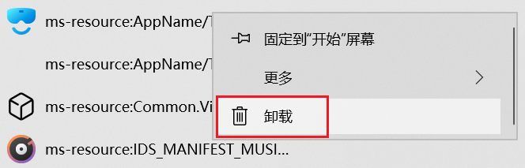
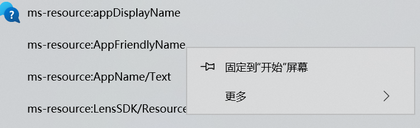

还你一个干净的Win10开始菜单
1.【左下角菜单】自定义
- Win+I
- 个性化
- 开始
- 选择哪些文件夹显示在"开始"菜单上
- ※除了"用户"和"电源"都可以设置
2.【最常用】怎么关
- Win+I
- 个性化
- 开始
- 关闭"显示最常用的应用"
3.【ms-resource】怎么关
-

- 右键能显示"卸载"的情况，可以通过"卸载"消失
小心: 这里卸载的是应用本身而不是快捷方式了，需要这些应用的人可以选择留着，也可以选择卸载后重新安装。

- 右键不显示"卸载"的情况，可以通过PowerShell命令强制卸载
- 以管理员身份运行PowerShell
- Get-AppxPackage # 查看
- Remove-AppXPackage # 卸载
- 结合2和3构成卸载命令语句：
内置应用：
Get-AppXPackage -allusers (应用名称)* | Remove-AppXPackage
比如：
Get-AppxPackage -allusers Microsoft.GetHelp* | Remove-AppxPackage
商店应用：
Get-AppXPackage -allusers *(应用名称)* | Remove-AppXPackage
比如：
Get-AppxPackage -allusers *Spotify* | Remove-AppxPackage
4.【开始屏幕】怎么关
- 清空磁贴后会自动关闭
5.【磁贴】怎么关
- 右键磁贴
- 从"开始"屏幕取消固定
单个操作
批量操作
详见第7点
6.【第四列磁贴】怎么关
- Win+I
- 个性化
- 开始
- 关闭"在"开始"菜单上显示更多磁贴"
7.【批量操作】显示的应用和磁贴
- 进入应用和磁贴lnk位置：
C:\ProgramData\Microsoft\Windows\Start Menu\Programs
C:\Users\Administrator\AppData\Roaming\Microsoft\Windows\Start Menu\Programs
两个位置都是。
- 在这里可以进行的操作：
删除：可删除已安装软件的lnk和已卸载软件的残留文件夹和lnk
添加：添加任何你想放进去的lnk
转移：控制是否"折叠进文件夹"or"摆在最外面"